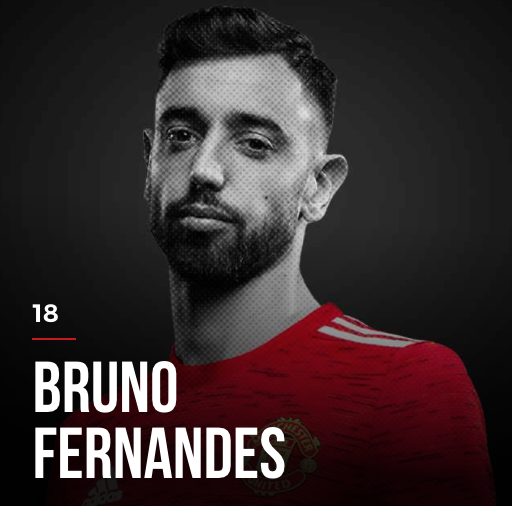
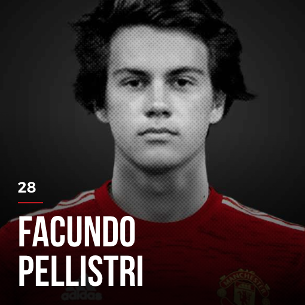
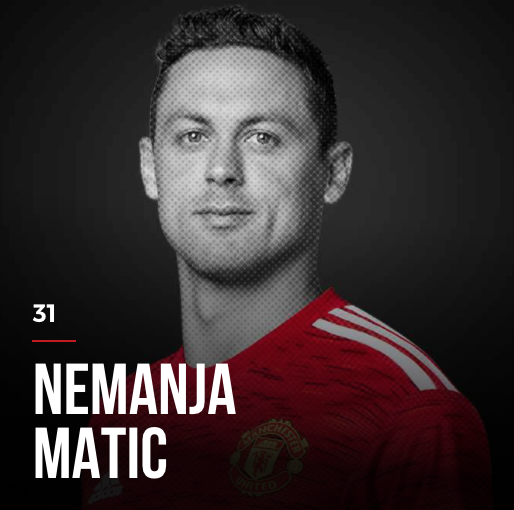
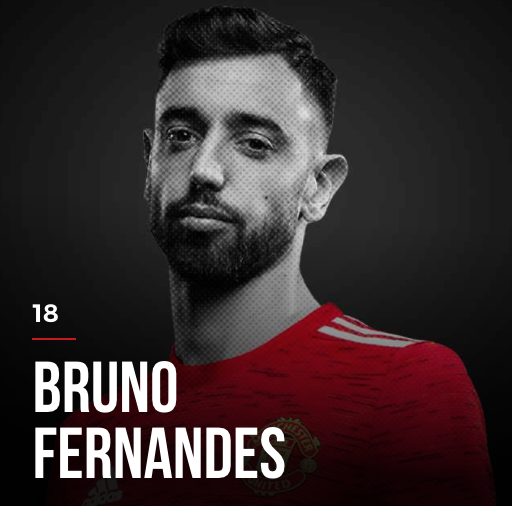
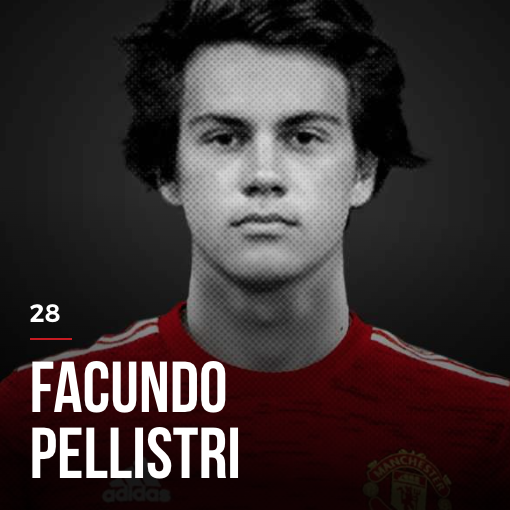
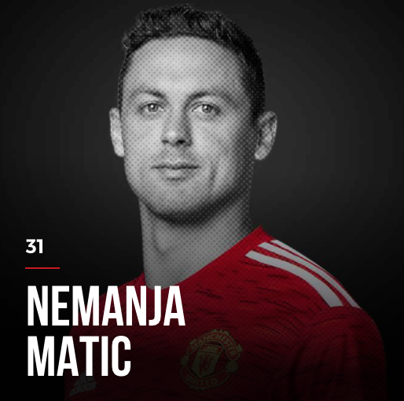

TOTAL TRANSFER MARKET VALUE: GBP 284 MILLION


 







Paul Pogba came back to the club in 2016 after leaving the club academy for Juventus in Seria A. He is the only person in the squad that won the World Cup (2018 with France).
Donny Van de Beek is a young star from Ajax. However, with his current bench time, he is worried about his future at Manchester United.
And welcome to the Old Trafford, the next magnicifient transfer from Lisbon like Ronaldo, Bruno Fernandes! He is loved by the supporters for contributing all his fire and passion to the club, and also humble off the pitch.